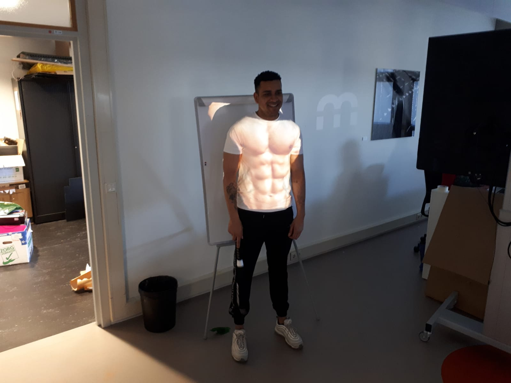

ASSIGNMENT
Workshop 1:
Spatial Augemented Reality maakt gebruik van videoprojectoren. Er wordt licht in kaart gebracht zodat je op verschillende manieren dingen kunt projecten op bijvoorbeeld 3D vormen. Het was de bedoeling dat de afbeeldingen werden geprojecteerd op een niet-vlak oppervlak. SAR kan je op kleine maar ook op grote oppervlakken projecteren. Het is ook mogelijk dat het interactief is.
Voor de workshop hebben we gebruik gemaakt van MadMapper. Wanneer het programma was gedownload op mijn laptop hebben we eerst gekeken hoe het programma werkt. Al snel kwamen we erachter dat het veel wegheeft van photoshop. In het bovenste vlak kun je de afbeelding plaatsen en aangeven welk gebied van de afbeelding of video je wilt gebruiken. In het onderste vlak kun je projectievlakken maken. Je kunt dan de projector naar het 3D object verzenden.
Nadat we hadden gekeken hoe het programma werkte hebben we met verschillende sensoren gespeeld. Zo hebben we gekeken hoe het programma werkt op audio.We hebben hier de afbeelding van de bij als basis genomen en nog een andere afbeelding van een bij. Deze afbeelding regaeerde op geluid. Dit werkte door middel van verschillende lagen. Hier hebben we een afbeelding met een bij laten bewegen zie daarvoor het onderstaande filmpje:
Daarna hebben we op een lichaam van iemand uit het groepje een sixpack geplaatst en gekeken hoe we de afbeelding juist op zijn lichaam konden plaatsen. Zie onderstaande afbeelding en filmpje:

En tot slot hebben we een verjaardagstaart geprojecteerd op een 3D object. We hebben kaarsjes toegevoegd en wanneer een groepslid de kaarsjes uitblies gingen de kaarsjes daadwerkelijk uit. Dit werkte dus ook op basis van geluid. Zie onderstaande afbeelding en filmpje:
Workshop 2:
Unreal Engine is een ontwikkelomgeving waarin je een virtuele wereld kunt creëren. In deze workshop hebben wij met een banaan en een rood blokje een game ontwikkeld.
Om te beginnen hebben is de banaan gedownload vanuit de bestanden die waren gegeven in vanuit de tutorial. Om de banaan te kunnen bewegen konden de sneltoetsen W, E en R gebruikt worden. Maar om de banaan er realistisch uit te laten zien is er eerst een kleur toegevoegd dit is gedaan door een materiaal toe te voegen. Om materiaal toe te voegen kregen we te maken met “Nodes”. Er zijn veel nodes beschikbaar die verschillende functies bieden. Nodes hebben ingangen en uitgangen die door middel van een cirkel met een pijl worden weergegeven. Om een kleur aan het materiaal toe te voegen wordt ook textuur gebruikt. Dit kan je weer met de nodes verbinden met elkaar zodat de banaan de juiste kleur, textuur en materiaal krijgt. Om te checken of alles is gelukt kan je dit met viewport checken. Met update en toepassen pas je het materiaal toe.
Toen de banaan er goed uitzag zijn we met de “Blueprints” aan de slag gegaan. Met blueprints kan je aangepast gedrag voor objecten creëren. Ook blueprints mak je aan met nodes. Wanneer je een blueprint aanmaakt verschijnt er een venster waarin je een bepaalde klasse moet selecteren. De blueprint neemt alle variabelen, functies en componenten van de ouderklasse over. De blueprint heeft 4 hoofdpanelen: components, my blueprint, details, graph en viewport.
Om de draaitafel te laten draaien zijn er twee componenten gebruikt. Ook werd er een cilinder gebruikt, hierop zal de banaan staan en de static mesh. Om de tafel te laten draaien komen de blueprints en de nodes samen met elkaar. Om de tafel te laten draaien moet je een nodes aanmaken, deze heet AddLocalRotation. Vervolgens is de rotatiewaarde ingeschakeld om het te laten draaien en sleep je de uitvoerpin van de Event Tick naar de invoerpin van de nodes AddLocalRotation. Door op compileren te klikken is de blueprint bijgewerkt.
Door Play in te drukken ging de banaan draaien. Hieronder zijn de afbeeldingen te vinden van een aantal stappen die er zijn ondernomen om de banaan draaiend te
Nadat er kennis was gemaakt met het programma was het tijd om de game te gaan maken. Dit was een stukje moeilijker dan de eerste stappen en daar ging een behoorlijk lange tijd overheen.
Als eerst is de Pawn-klasse geselecteerd. Vervolgens is de camera een methode om de wereld van het spel te bekijken. Bij componenten werd de camera toegevoegd. Om het spel realistischer te maken wordt de rode kubus de speler van het spel. Tijdens het spelen van de game is het de bedoeling dat er iets gebeurd, de rode kubus zal dus rond bewegen. Maar hiervoor zijn eerst een paar instellingen gedaan. Als eerste zijn de inputs ingesteld aan een actie. Alle gebeurtenissen worden geactiveerd door de nodes die aan de gebeurtenissen zijn gekoppeld.
Om de kubus te laten bewegen zijn twee mappen toegevoegd. MoveForward en MoveRight. Hiermeer kun je links en rechts bewegen en kun je je bewegingen in kaart brengen door de toetsen W, A, S en D te gebruiken. Vervolgens zijn er verschillende nodes ingesteld om onder andere de bewegingsinvoer toe te voegen. Om de rode kubus echt te laten bewegen moet je de offset berekenen door movement input toe te voegen aan de locatie van de kubus. Wanneer het Tick-event is toegevoegd kan elk frame in de game bewegen. De beweging moet wel rate onafhankelijk zijn anders beweegt de kubus veel sneller. Wanneer erop compileren en play word gedrukt kon de rode kubus bewegen. Omdat de tijd tussen de frames (delta secondes) klein is zal de kubus langzaam bewegen daarom is de MaxSpeed in 600 gewijzigd.
Om vervolgens de botsingen te creëren moet de gebeurtenisgrafiek naar de node AddActorLocalOffset worden gekoppeld. AddActorLocalOffset brengt je naar een nieuwe locatie en sweep zorgt ervoor dat de kubus botst met alles wat zich tussen de locaties bevindt.
Tenslotte maak je een DestroyActor nodes aan en knopper je dit aande nodes OnComponentBeginOverlap. Nu zullen de pionnen uit het spel worden verwijderd wanneer de rode kubus ertegenaan botst. De pinnen zijn in dit geval de eerder aangemaakte bananen die in het spel zijn geplaatst. Om op play te klikken kan je de bananen verzamelen. Hieronder zijn een aantal stappen te zien en een filmpje van het spel:

* Bij de eerste workshop hebben wij in een groep gewertkt, iedereen had foto’s gemaakt. Hierdoor zullen sommige afbeeldingen overeen komen met deze van klasgenoten. Doordat Unrel engine op een gegeven moment helemaal vast liep op mijn computer heb ik niet meer alle screenshots kunnen maken van de opdrachten die ik heb uitgevoerd. Hierdoor heb ik een aantal van mijn schermafbeeldingen op de computer van een klasgenoot gemaakt zodat u een goed beeld bij mijn beschrijving hebt.